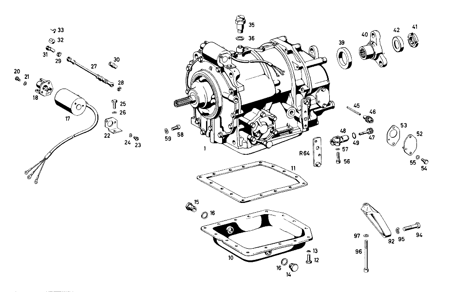

| № | Артикул | Название | Кол. | Примечание | Ограничение |
|---|---|---|---|---|---|
| 1 | A 112 270 16 01 | TRANSMISSION | 1 | Автоматическая коробка переключения передач | |
| 10 | A 112 270 04 12 | - Поддон масляный | 1 | Автоматическая коробка переключения передач | |
| 11 | A 112 271 09 80 | - Уплотнительная прокладка | 1 | Автоматическая коробка переключения передач | |
| 12 | N 000933 007023 | - Винт | 16 | Автоматическая коробка переключения передач | |
| 13 | N 000137 007200 | - Пружинная шайба | 16 | Автоматическая коробка переключения передач | |
| 14 | N 007604 014102 | - Резьбовая пробка | 1 | Автоматическая коробка переключения передач | |
| 15 | N 915011 008100 | - ПОЛЫЙ БОЛТ | 1 | для OIL FILLER Рулевое управление: ВправоАвтоматическая коробка переключения передач | |
| 15 | N 915011 008100 | - ПОЛЫЙ БОЛТ | 1 | для OIL FILLER Рулевое управление: ВлевоАвтоматическая коробка переключения передач | |
| 16 | N 007603 014100 | - Уплотнительное кольцо | 2 | для OIL FILLER; 14X18\-AL Автоматическая коробка переключения передач | |
| 17 | A 000 304 02 90 | - ПЕРЕКЛ.МАГНИТ | 1 | Автоматическая коробка переключения передач | |
| 18 | A 112 300 06 36 | - ОПОРА ПОДШИПНИКА | 1 | Автоматическая коробка переключения передач | |
| 20 | A 094 990 26 05 | - Винт | 2 | Автоматическая коробка переключения передач | |
| 21 | N 000137 005100 | - Пружинная шайба | 2 | Автоматическая коробка переключения передач | |
| 22 | A 112 304 00 40 | - ДЕРЖАТЕЛЬ | 1 | Автоматическая коробка переключения передач | |
| 23 | N 000084 005149 | - Винт | 2 | Автоматическая коробка переключения передач | |
| 24 | N 000137 005100 | - Пружинная шайба | 2 | Автоматическая коробка переключения передач | |
| 25 | N 000933 007023 | - Винт | 2 | Автоматическая коробка переключения передач | |
| 26 | N 000137 007200 | - Пружинная шайба | 2 | Автоматическая коробка переключения передач | |
| 27 | A 112 300 10 15 | - Тяга | 1 | Автоматическая коробка переключения передач | |
| 28 | N 000934 005004 | - Гайка | 3 | R. H. THREAD; M5 Автоматическая коробка переключения передач | |
| 29 | N 000934 005010 | - Гайка | 1 | L. H. THREAD Автоматическая коробка переключения передач | |
| 30 | N 900333 005001 | - Стяжная гайка | 1 | Автоматическая коробка переключения передач | |
| 31 | N 071805 008204 | - Шаровой подпятник | 2 | Автоматическая коробка переключения передач | |
| 32 | A 000 997 60 41 | - Уплотнительное кольцо | 1 | Автоматическая коробка переключения передач | |
| 33 | N 071805 008401 | - СКОБА ПРЕДОХРАНИТЕЛЬНАЯ | 1 | Автоматическая коробка переключения передач | |
| 35 | A 112 270 01 82 | - Воздушный клапан | 1 | Автоматическая коробка переключения передач | |
| 36 | N 007603 014100 | - Уплотнительное кольцо | 1 | 14X18\-AL Автоматическая коробка переключения передач | |
| 39 | A 003 997 47 46 | - Уплотнительное кольцо | 1 | Автоматическая коробка переключения передач | |
| 40 | A 111 262 00 45 | - Фланец | 1 | Автоматическая коробка переключения передач | |
| 41 | A 186 262 02 26 | - Шлицевая гайка | 1 | Автоматическая коробка переключения передач | |
| 42 | A 186 262 01 73 | - предохранитель | 1 | Автоматическая коробка переключения передач | |
| 45 | A 112 274 00 32 | - ПРИВОДНОЙ ВАЛ | 1 | Автоматическая коробка переключения передач | |
| 46 | A 112 270 05 27 | - ПРИВОД СПИДОМЕТРА | 1 | Автоматическая коробка переключения передач | |
| 47 | A 112 270 06 27 | - Привод спидометра | 1 | Автоматическая коробка переключения передач | |
| 48 | A 112 270 01 13 | - Корпус подшипника | 1 | Автоматическая коробка переключения передач | |
| 49 | A 000 997 68 45 | - Уплотнительное кольцо | 1 | Автоматическая коробка переключения передач | |
| 52 | A 112 270 00 08 | - Крышка | 1 | Автоматическая коробка переключения передач | |
| 53 | A 112 274 01 80 | - уплотнение | 1 | Автоматическая коробка переключения передач | |
| 54 | N 000933 006024 | - Винт | 2 | Автоматическая коробка переключения передач | |
| 55 | N 000137 006200 | - Пружинная шайба | 2 | Автоматическая коробка переключения передач | |
| 56 | N 000912 006042 | Винт | 1 | Автоматическая коробка переключения передач | |
| 57 | N 000137 006200 | Пружинная шайба | 1 | Автоматическая коробка переключения передач | |
| 58 | N 000933 008016 | Винт | 6 | Автоматическая коробка переключения передач | |
| 59 | N 000137 008200 | Пружинная шайба | 6 | Автоматическая коробка переключения передач | |
| 60 | A 109 270 01 84 | ТРУБКА МАСЛОЗАЛИВНАЯ | 1 | Автоматическая коробка переключения передач | |
| 63 | A 112 270 01 83 | ЩУП МАСЛЯНЫЙ | 1 | Автоматическая коробка переключения передач | |
| 64 | A 112 270 06 56 | РЫЧАГ | 1 | AUXILIARY LEVER Рулевое управление: ВправоАвтоматическая коробка переключения передач | |
| 65 | A 112 270 03 47 | VACUUM LINE | 1 | Рулевое управление: ВлевоАвтоматическая коробка переключения передач | |
| 66 | A 111 276 00 40 | ДЕРЖАТЕЛЬ | 1 | Автоматическая коробка переключения передач | |
| 67 | A 112 997 03 81 | втулка | 2 | Автоматическая коробка переключения передач | |
| 70 | A 112 540 00 60 | ЭЛ. ПРОВОД | 1 | Автоматическая коробка переключения передач | |
| 71 | A 112 540 02 60 | ЭЛ. ПРОВОД | 1 | Автоматическая коробка переключения передач | |
| 72 | A 001 542 13 17 | ДАТЧИК | 2 | Автоматическая коробка переключения передач | |
| 73 | N 007603 012100 | Уплотнительное кольцо | 2 | 12X16\-AL Автоматическая коробка переключения передач | |
| 74 | A 112 990 02 63 | Полый болт | 2 | Автоматическая коробка переключения передач | |
| 75 | N 007603 008101 | Уплотнительное кольцо | 4 | Автоматическая коробка переключения передач | |
| 76 | N 000931 006046 | БОЛТ | 2 | Автоматическая коробка переключения передач | |
| 77 | N 000137 006200 | Пружинная шайба | 2 | Автоматическая коробка переключения передач | |
| 78 | A 111 540 04 38 | Электрический провод | 1 | Автоматическая коробка переключения передач | |
| 79 | A 111 995 01 01 | ХОМУТ | 1 | Автоматическая коробка переключения передач | |
| 80 | A 112 270 06 96 | ПРОВОД | 1 | Автоматическая коробка переключения передач | |
| 81 | A 112 270 05 96 | OIL LINE | 1 | Автоматическая коробка переключения передач | |
| 82 | A 004 997 77 82 | ШЛАНГ | 2 | Автоматическая коробка переключения передач | |
| 83 | A 112 270 04 96 | OIL LINE | 1 | Автоматическая коробка переключения передач | |
| 84 | A 112 270 07 96 | ПРОВОД | 1 | Автоматическая коробка переключения передач | |
| 85 | N 915011 006302 | ПОЛЫЙ БОЛТ | 2 | Автоматическая коробка переключения передач | |
| 86 | N 007603 012100 | Уплотнительное кольцо | 4 | 12X16\-AL Автоматическая коробка переключения передач | |
| 87 | A 120 995 00 05 | хомут | 6 | Автоматическая коробка переключения передач [402] БОЛЬШЕ НЕ ПОСТАВЛЯЕТСЯ | |
| 88 | N 000933 006023 | Винт | 6 | Автоматическая коробка переключения передач | |
| 89 | N 000127 006200 | Пружинное кольцо | 6 | Автоматическая коробка переключения передач | |
| 90 | A 112 997 02 81 | втулка | 6 | Автоматическая коробка переключения передач | |
| 91 | A 111 995 12 32 | ХОМУТ | 2 | Автоматическая коробка переключения передач | |
| 92 | A 189 014 00 07 | УСИЛИТЕЛЬ | 1 | OPTIONAL Автоматическая коробка переключения передач | |
| 94 | N 000931 008058 | Винт | 2 | SUPPORT TO CLUTCH HOUSING Автоматическая коробка переключения передач | |
| 95 | N 000137 008200 | Пружинная шайба | 2 | SUPPORT TO CLUTCH HOUSING Автоматическая коробка переключения передач | |
| 96 | N 000912 008081 | Цилиндрич. винт | 2 | SUPPORT TO OIL PAN Автоматическая коробка переключения передач | |
| 97 | N 000433 008403 | Шайба | 2 | SUPPORT TO OIL PAN Автоматическая коробка переключения передач | |
| A 112 270 09 01 | TRANSMISSION | 1 | Автоматическая коробка переключения передач | ||
| A 112 997 03 72 | - Штуцер | 1 | для OIL FILLER Рулевое управление: ВлевоАвтоматическая коробка переключения передач | ||
| A 112 304 00 78 | - ТЯГА | 1 | Автоматическая коробка переключения передач | ||
| N 900055 005000 | - Пружинная шайба | 1 | PULL ROD TO MAGNET Автоматическая коробка переключения передач | ||
| N 000433 005300 | - Шайба | 1 | PULL ROD TO MAGNET Автоматическая коробка переключения передач | ||
| N 000094 001501 | - ШПЛИНТ | 1 | PULL ROD TO MAGNET Автоматическая коробка переключения передач | ||
| A 094 260 11 00 | - Воздушный клапан | 1 | Автоматическая коробка переключения передач | ||
| N 007603 010101 | - Уплотнительное кольцо | 1 | Автоматическая коробка переключения передач | ||
| A 002 997 08 46 | - Уплотнительное кольцо | 1 | Автоматическая коробка переключения передач | ||
| A 112 272 04 45 | - ФЛАНЕЦ | 1 | Автоматическая коробка переключения передач | ||
| A 112 270 00 84 | OIL FILLER | 1 | Рулевое управление: ВлевоАвтоматическая коробка переключения передач | ||
| A 112 270 02 84 | OIL FILLER | 1 | Автоматическая коробка переключения передач | ||
| N 915011 008101 | ПОЛЫЙ БОЛТ | 1 | Автоматическая коробка переключения передач | ||
| N 007603 014100 | Уплотнительное кольцо | 2 | 14X18\-AL Автоматическая коробка переключения передач | ||
| A 112 270 00 83 | ЩУП МАСЛЯНЫЙ | 1 | Автоматическая коробка переключения передач | ||
| N 000933 006077 | Винт | 2 | AUXILIARY LEVER TO GEAR SELECTOR LEVER Рулевое управление: ВправоАвтоматическая коробка переключения передач | ||
| N 000137 006200 | Пружинная шайба | 2 | AUXILIARY LEVER TO GEAR SELECTOR LEVER Рулевое управление: ВправоАвтоматическая коробка переключения передач | ||
| N 000125 006407 | ШАЙБА | 2 | AUXILIARY LEVER TO GEAR SELECTOR LEVER Рулевое управление: ВправоАвтоматическая коробка переключения передач | ||
| N 000934 006000 | Гайка | 2 | AUXILIARY LEVER TO GEAR SELECTOR LEVER Рулевое управление: ВправоАвтоматическая коробка переключения передач | ||
| A 112 270 00 47 | VACUUM LINE | 1 | Рулевое управление: ВлевоАвтоматическая коробка переключения передач | ||
| A 112 270 01 47 | VACUUM LINE | 1 | Рулевое управление: ВправоАвтоматическая коробка переключения передач | ||
| A 112 270 02 47 | VACUUM LINE | 1 | Рулевое управление: ВправоАвтоматическая коробка переключения передач | ||
| N 000084 004164 | Винт | 1 | PIPE CLAMP TO OIL LINES Автоматическая коробка переключения передач | ||
| N 000127 004200 | Пружинное кольцо | 1 | PIPE CLAMP TO OIL LINES Автоматическая коробка переключения передач | ||
| N 000934 004004 | Гайка | 1 | PIPE CLAMP TO OIL LINES; M4 Автоматическая коробка переключения передач | ||
| A 189 014 02 07 | УСИЛИТЕЛЬ | 1 | OPTIONAL Автоматическая коробка переключения передач | ||
| A 189 014 01 07 | УСИЛИТЕЛЬ | 1 | OPTIONAL Автоматическая коробка переключения передач | ||
| A 189 014 03 07 | УСИЛИТЕЛЬ | 1 | OPTIONAL Автоматическая коробка переключения передач | ||
| N 000912 010047 | Винт | 3 | TRANSMISSION TO CYLINDER CRANKCASE Автоматическая коробка переключения передач | ||
| N 000137 010100 | ШАЙБА ПРУЖИННАЯ | 3 | TRANSMISSION TO CYLINDER CRANKCASE Автоматическая коробка переключения передач | ||
| N 000127 010200 | Пружинное кольцо | 1 | для INTERMEDIATE PLATE Автоматическая коробка переключения передач | ||
| N 000934 010005 | Гайка | 1 | для INTERMEDIATE PLATE Автоматическая коробка переключения передач | ||
| N 000912 010046 | Винт | 2 | TRANSMISSION с CLUTCH TO OIL PAN, ENGINE Автоматическая коробка переключения передач | ||
| N 000137 010100 | ШАЙБА ПРУЖИННАЯ | 4 | TRANSMISSION с CLUTCH TO OIL PAN, ENGINE Автоматическая коробка переключения передач | ||
| N 000934 010005 | Гайка | 2 | TRANSMISSION с CLUTCH TO OIL PAN, ENGINE Автоматическая коробка переключения передач |
Позиций: 112 · подписано на схемах: 77 · колесо — плавный зум в курсор, перетаскивание — пан, двойной клик — зум, клик по артикулу — скопировать.